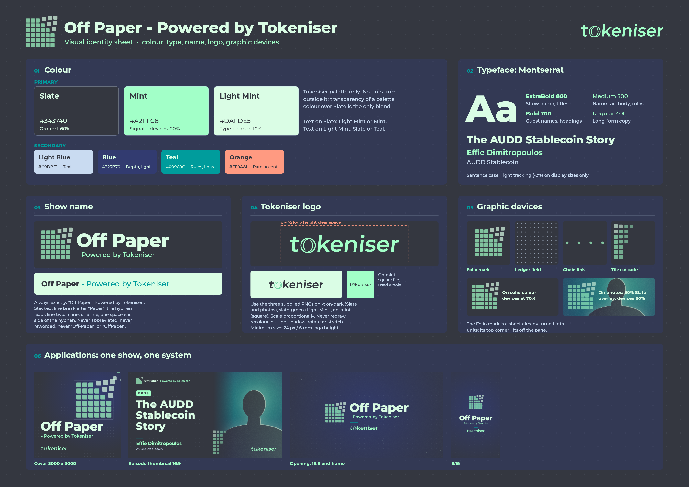
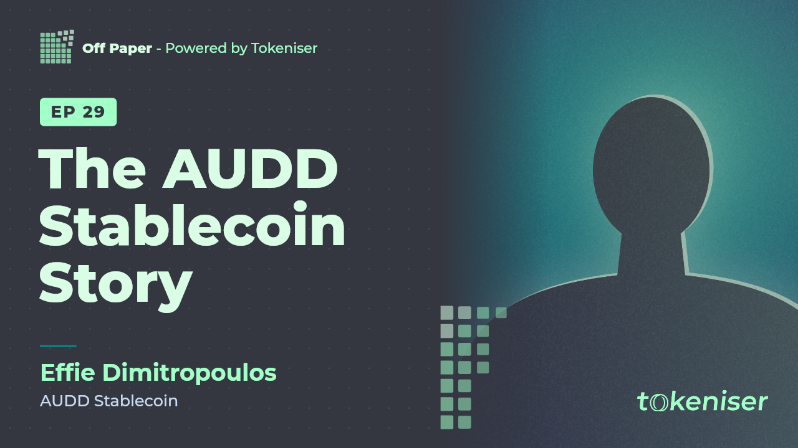
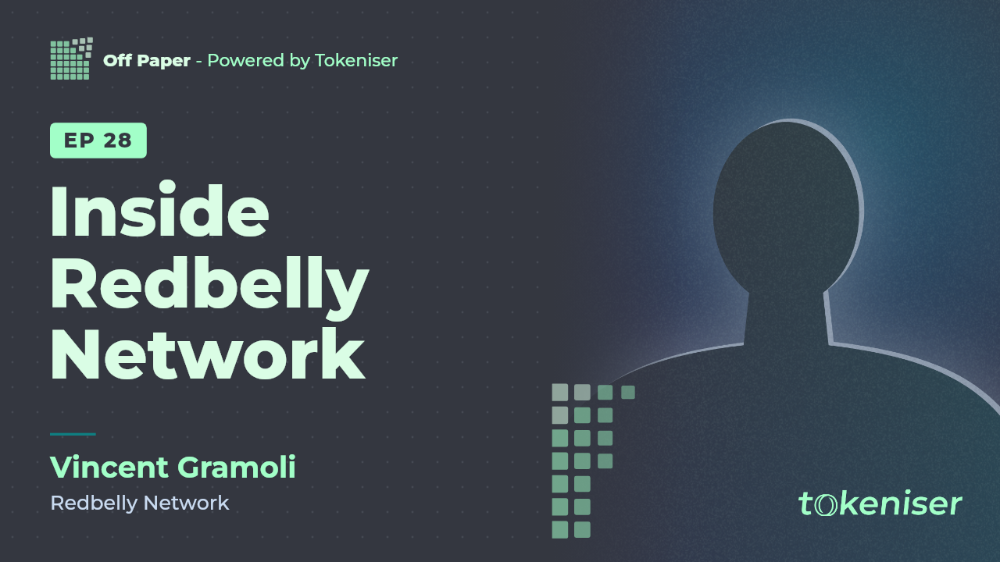
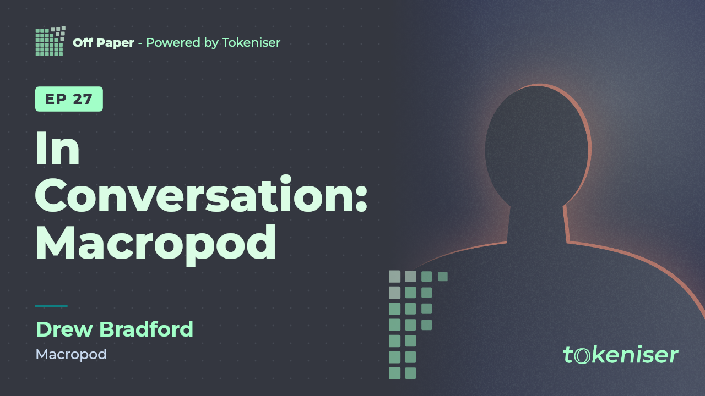

COpening sequence
18 seconds, music and sound design only. A document turns into tiles, the tiles lock into linked blocks, and the chain folds into the Folio mark before the show name and Tokeniser logo arrive. It ends on solid Slate so an episode can cut straight in. Each format is laid out separately, not cropped.
AVisual identity
The Folio mark is a 6 x 6 grid of tiles: a sheet of paper that has already become discrete units, with its top corner lifting off the page. It uses only the Tokeniser palette and Montserrat.


BShow cover art
A square cover for Spotify, Apple Podcasts and YouTube.


BEpisode thumbnails
The template has editable slots for episode number, title, guest name, role and guest photo. Titles resize themselves to fit up to three lines so they stay readable on a phone. The examples use guests from past Redbelly Insights episodes, with placeholder portraits made for this project.




All deliverables
Every file listed in the brief.
| # | Deliverable | Files |
|---|---|---|
| 1 | Identity sheet | PDF · PNG |
| 2 | Cover art | 3000 x 3000 PNG · 1400 x 1400 JPG |
| 3 | Thumbnail template + 3 examples | Browser maker · SVG template · EP 29 · EP 28 · EP 27 |
| 4 | Opening sequence | 16:9 MP4 · 9:16 MP4 |
| 5 | Project files | Source project · Score master WAV |
| 6 | Licence proof | LICENCES.md · Montserrat OFL |
| - | Documentation | README · Verification report |